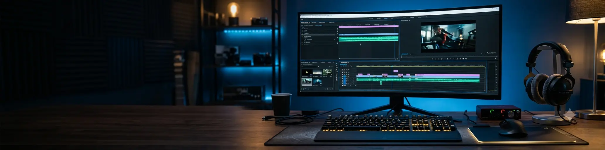

Edição de Vídeo Completa
para o seu Negócio
Do conteúdo educativo que engaja aos vídeos curtos
que convertem.
Meu Portfólio
🎬 Aprenda um pouco do meu processo de edição
Neste vídeo compartilho algumas das técnicas que utilizo no dia a dia para criar edições mais dinâmicas e envolventes.
📺 Canais que já editei:


Sobre Mim
Olá! Sou editor de vídeo especializado em criar conteúdos que engajam, ensinam e convertem. Minha bagagem inclui a edição de videoaulas didáticas para cursinhos preparatórios e infoprodutos na Hotmart, além de projetos autorais e canais de nicho focados em alta retenção.
Experiência Profissional
Editor de Vídeo | Vale Concursos (2 anos)
Atuei na pós-produção audiovisual voltada para a preparação de concursos públicos, transformando gravações brutas em conteúdos didáticos e dinâmicos.
- Infoprodutos (Hotmart): Edição estruturada de módulos de videoaulas.
- Canais de Tração (YouTube): Edição de conteúdos estratégicos como aulões e dicas rápidas.
Saber Mais
Além de trabalhar nos bastidores produzindo grandes projetos para meus clientes, eu também compartilho meu conhecimento e paixão pelo audiovisual na internet!
Meu Canal sobre Edição de Vídeo
Acompanhe tutoriais, dicas de workflow, técnicas de retenção e bastidores da pós-produção diretamente no meu canal oficial.
Acessar meu Canal no YouTube 🎥